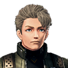
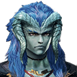

Main Story
Progressing through the main campaign unlocks every core system on 惑星ミラ, from full party control in Chapter 3 and  O.C.ギア in Chapter 5 to your ドール license after Chapter 6 and full flight after Chapter 9. Each chapter walkthrough below keeps plot twists hidden while giving you clear travel steps, boss elemental resistance breakdowns, and direct links to every newly unlocked quest so you can focus purely on the story or sweep side content chapter by chapter.
O.C.ギア in Chapter 5 to your ドール license after Chapter 6 and full flight after Chapter 9. Each chapter walkthrough below keeps plot twists hidden while giving you clear travel steps, boss elemental resistance breakdowns, and direct links to every newly unlocked quest so you can focus purely on the story or sweep side content chapter by chapter.
 プロローグ 惑星ミラ0/6 (0%)
プロローグ 惑星ミラ0/6 (0%)
Your awakening in Primordia walks you through basic movement, weapon switching, and Battle Arts on the road toward New Los Angeles. Follow Elma's lead along the rain-slicked ridge to reach your new home base safely.
Prerequisites. Rec. Lv. 1 · Automatically begins after character creation.
- After awakening from the lifepod in 流星の谷 in 原初の荒野, follow
 エルマ toward the nearby lifepod.
エルマ toward the nearby lifepod. - Defeat the tutorial boss オリジン・ブラッタ (Lv. 1) using melee and ranged auto-attacks plus Battle Arts.
- Climb out of Starfall Basin and follow the path west past 陰りの丘 toward West ウエストゲートの平原.
- At West Gate Plain in front of the Habitat Unit, defeat the エルダー・ルプス (Lv. 4) and two ノービス・ルプスes (Lv. 3), focus down the two Callow Grexes first.
- Ride the West Gate elevator into ニューロサンゼルス.
- Chapter Cleared. Unlocks access to ニューロサンゼルス and begins Chapter 1.
Tutorial encounter (Lv. 1). Weak to Ether (-25) and Thermal (-25), slightly resistant to Physical (+20). Follow Elma's Soul Voice prompts for free healing.
Fought alongside two Lv. ノービス・ルプス. Very weak to Thermal (-50) and Ether (-25). Eliminate the two Callow Grexes first to reduce incoming damage, then break the Elder Grex's appendages.
Two Lv. 3 adds accompanying the Elder Grex. Weak to Thermal (-50) and Ether (-25), low HP, clear them first.
第1章 ニューロサンゼルス0/5 (0%)
Arriving in New LA introduces the Administrative District, the BLADE Barracks, and your first FrontierNav probe installation. Clearing this short orientation unlocks division bonuses and city fast travel.
Prerequisites. Rec. Lv. 3 · Automatically follows Prologue. Wii U required Elma and Lin in party (relaxed on Mission Table acceptance in DE).
- Enter 工業エリア to meet リン,
 イリーナ・アクロフ,
イリーナ・アクロフ, 
グイン, and ダグラス. Lin joins your party.
ダグラス. Lin joins your party. - Ride the transport to the ブレイドホーム in the ブレイドエリア and speak with ナギ・ケンタロウ outside to formally start Chapter 1.
- Leave the BLADE Barracks and follow Elma and Lin on a guided tour of ユニオンストリート and ショップ街 (Arms Manufacturer terminal & shop).
- Take the central elevator up to ブレイドタワー to meet ヴァンダム and モーリス・ショーソン, then choose one of the eight ユニオン, in Switch, Division choice is purely cosmetic/RP and can be changed anytime at the Barracks terminal.
- Chapter Cleared. Official BLADE registration, access to ブレイドホーム, Basic Missions ブレイドコンコース, and Division selection.
第2章 フロンティアネット0/6 (0%)
Your first field assignment sends your team back into Primordia to secure a FrontierNav sector and clear out an enemy outpost, setting up the routine of planting probes along every road you travel.
Prerequisites. Rec. Lv. 5 · Complete Chapter 1, accept from  ナギ in the ブレイドホーム.
ナギ in the ブレイドホーム.
- Speak with
 ナギ・ケンタロウ inside the ブレイドホーム to receive your FrontierNav assignment.
ナギ・ケンタロウ inside the ブレイドホーム to receive your FrontierNav assignment. - Exit New Los Angeles via the East イーストゲート into 原初の荒野's East イーストゲートの平原.
- Head to 第116区FNスポット on East Gate Plain and defeat the story-exclusive Tyrant Volkampf, 追撃のボルカンフ (Lv. 5).
- Examine the FrontierNav beacon at FN Site 116 to install your first
 データプローブ.
データプローブ. - Return to the ブレイドエリア and talk to カースティ in front of BLADE Tower to learn how to change Basic Data Probes into 採掘プローブG1 and リサーチプローブG1, then report back to the BLADE Barracks.
- Chapter Cleared. Unlocks フロンティアネット system, 採掘プローブG1, and リサーチプローブG1.
Story-exclusive Cinicula Tyrant (Lv. 5, one-time fight). Resistant to Physical (+40), weak to Ether (-20) and Thermal (-20). Target its shell/claw appendages and use Thermal/Beam/Ether Arts such as Lin's Gatling Gun skills.
第3章 運命の解放者0/5 (0%)
Completing Chapter 3 is the campaign's first major milestone, opening full party member swapping from the pause menu, Quick Cooldown energy, Affinity Missions, and free exploration across Mira.
Prerequisites. Rec. Lv. 9 · Complete Chapter 2, accept from ヴァンダム in the ブレイドホーム.
- Accept the mission in the ブレイドホーム and head northeast across 原初の荒野 to ビアーノ丘陵 to search for Nelson's missing Pathfinder team.
- Rendezvous with イリーナ・アクロフ's team on Biahno Hills, then track the hostile xenoforms north to the 風波の要塞 in northern Primordia.
- Fight your way cautiously into the Seaswept Base (avoid aggroing high-level indigens outside the base walls) and defeat the Prone sentries to rescue the タツ.
- Defeat the base commander グレンナー (Lv. 10) and his Prone guards, then return to the ブレイドホーム in New Los Angeles.
- Chapter Cleared. 貯蔵プローブ, unlocks Party Member recruitment across NLA, Affinity キズナクエスト, and タツ joins as non-combat companion.
Prone base commander (Lv. 10) accompanied by two Lv. バイアス・ファイター. Weak to Beam (-25). Clear the two lower-HP Prone adds first so your party isn't flanked, then stagger/topple Glennar.
Unlocked Affinity Missions (6).  誇り高き探索者 ·
誇り高き探索者 ·  元軍人 ·
元軍人 ·  リンとエルマ ·
リンとエルマ ·  イエルヴとの出会い ·
イエルヴとの出会い ·  リフレッシュ ·
リフレッシュ ·  NLAの聖女
NLAの聖女
Unlocked Side Quests (20).  NLAの安全 ·
NLAの安全 ·  アームズの使命 ·
アームズの使命 ·  植物調査 ·
植物調査 ·  エクステンション ·
エクステンション ·  ミーアの出立 ·
ミーアの出立 ·  孤立する一匹狼 ·
孤立する一匹狼 ·  協力する一匹狼 ·
協力する一匹狼 ·  ミラニウム・ファイト ·
ミラニウム・ファイト ·  押し付けられた任務A ·
押し付けられた任務A ·  押し付けられた任務B ·
押し付けられた任務B ·  押し付けられた任務C ·
押し付けられた任務C ·  リサーチ・チャレンジ ·
リサーチ・チャレンジ ·  紅き死神の挑戦 ·
紅き死神の挑戦 ·  開拓の手引き ·
開拓の手引き ·  惑星ミラの開拓その1 ·
惑星ミラの開拓その1 ·  原初の荒野の開拓1 ·
原初の荒野の開拓1 ·  原初の荒野の開拓2 ·
原初の荒野の開拓2 ·  原初の荒野の開拓3 ·
原初の荒野の開拓3 ·  上納 ·
上納 ·  ヤードリーの企て
ヤードリーの企て
第4章 グロウス0/6 (0%)
Venturing northwest into the bioluminescent jungles of Noctilum expands your roster with L and unlocks Meredith & Co. at the Arms Manufacturer terminal, laying the groundwork for future Ether weapons.
Prerequisites. Rec. Lv. 15 · At least 15% of 原初の荒野 ·  開拓の手引き · ブレイドレベルを学ぶ · Complete Normal Mission 開拓の手引き, survey >= 15% of 原初の荒野, and (Wii U only) complete Basic Mission ブレイドレベルを学ぶ.
開拓の手引き · ブレイドレベルを学ぶ · Complete Normal Mission 開拓の手引き, survey >= 15% of 原初の荒野, and (Wii U only) complete Basic Mission ブレイドレベルを学ぶ.
- 開拓の手引き is completed and 原初の荒野 survey rate is at least 15%, then accept Chapter 4 at the ブレイドホーム.
- Travel northwest through 嘆き平原 pass into 夜光の森.
- Follow the forest trail to the 至空大巻木 to meet Pathfinder leader
 ラオ (who joins the party for this mission), then proceed north to meet the xenoform merchant
ラオ (who joins the party for this mission), then proceed north to meet the xenoform merchant 
ルー. - Advance to 鯨の鼻腔 無地山地 in Noctilum to locate the downed Lifehold unit.
- Defeat Ganglion commander ゲーティア (Lv. 16) and her two マルナーク・ルーク, then report back to the BLADE Barracks.
- Chapter Cleared. 貯蔵プローブ, playable characters ラオ and ルー become available to recruit in NLA.
Fought alongside two Lv. マルナーク・ルーク (Assault Rifle & Sniper Rifle). Goetia resists Electric (+80) and Ether (+35) and is weak to Thermal (-20) and Beam (-10). Defeat both Marnuck Rooks first Watch out for 'Thunder Volcano' (party-wide Electric damage), 'Tentacle Spear' (Stun), and her 70-second close-range Electric Spike aura, avoid negative Electric resistance armor and heal with Soul Voices or Irina's Smooth Recovery.
第5章 マ・ノンの民0/5 (0%)
Pushing into Oblivia's desert ruins rewards Cross with ground Overdrive and brings Candid & Credible online in Armory Alley, marking the point where ground combat speed and Potential gear take off.
Prerequisites. Rec. Lv. 19 · 第301区FNスポット is tapped ·  リフレッシュ · Complete Affinity Mission リフレッシュ and tap 第301区FNスポット at the entrance of 忘却の渓谷.
リフレッシュ · Complete Affinity Mission リフレッシュ and tap 第301区FNスポット at the entrance of 忘却の渓谷.  イリーナ and グイン cannot be in the party.
イリーナ and グイン cannot be in the party.
- Cross east from Primordia through East イーストゲートの平原 イビッツア砂漠 to tap 第301区FNスポット in 忘却の渓谷 and complete リフレッシュ, then start Chapter 5 at the ブレイドホーム (without イリーナ・アクロフ or グイン).
- Travel into 忘却の渓谷's 渓谷入口 to meet the peaceful マ・ノン人 xenoforms and defeat the ヘッド・クムーバ (Lv. 20) plus two プラトーン・クムーバ.
- Destroy the three Ganglion Turret Batteries across Oblivia (around ミリガン補給基地 and adjacent ridges as marked on your map, using stealth/back routes to avoid Lv. 30+ enemies): First Turret, Second Turret, and Third Turret (guarded by Marnuck/Prone/Pugilith squads).
- After an emergency cutscene reveals mimeosome technology and unlocks
 オーバークロックギア, defeat the pursuing Marnuck/Jacul ambush and return to New Los Angeles.
オーバークロックギア, defeat the pursuing Marnuck/Jacul ambush and return to New Los Angeles. - Chapter Cleared. Unlocks オーバークロックギア mechanic, コピープローブ, establishes the マ・ノン宇宙船エリア district in NLA, and unlocks Arms Manufacturer 偽りなき真心堂.
Mechanoid boss (Lv. 20) accompanied by two Lv. プラトーン・クムーバ (Railgun & Cannon). Weak to Gravity (-50), Beam (-25), and Electric (-25), resists Physical (+30). Focus down the two Platoon Qmoevas first to stop their heavy ranged cannon fire, then break Chief Qmoeva's weapon appendages.
Unlocked Affinity Missions (7).  パスファインダー ·
パスファインダー ·  ブレイドの仕事 ·
ブレイドの仕事 ·  アヴァランチの破戒僧 ·
アヴァランチの破戒僧 ·  クリューの考古学者 ·
クリューの考古学者 ·  ノポン友好条約 ·
ノポン友好条約 ·  すべては私の夢のため ·
すべては私の夢のため ·  行方不明者の捜索
行方不明者の捜索
Unlocked Side Quests (18).  ミーアの冒険 ·
ミーアの冒険 ·  前進する意思 ·
前進する意思 ·  ドドンガ・キャラバン ·
ドドンガ・キャラバン ·  ドリアン・キャラバン ·
ドリアン・キャラバン ·  タツの弟妹 ·
タツの弟妹 ·  正体不明の異星人 ·
正体不明の異星人 ·  惑星ミラの開拓その2 ·
惑星ミラの開拓その2 ·  夜光の森の開拓1 ·
夜光の森の開拓1 ·  夜光の森の開拓2 ·
夜光の森の開拓2 ·  夜光の森の開拓3 ·
夜光の森の開拓3 ·  ドライランド救出作戦 ·
ドライランド救出作戦 ·  大樹の一族 ·
大樹の一族 ·  オル・バルディレオ ·
オル・バルディレオ ·  ラダ・バルディレオ ·
ラダ・バルディレオ ·  ウゾマ・ヴァサゴ ·
ウゾマ・ヴァサゴ ·  ノポンの用心棒 ·
ノポンの用心棒 ·  セレストスリー ·
セレストスリー ·  ビアーノ浄水場の建造
ビアーノ浄水場の建造
第6章 星からの遺物0/5 (0%)
Retrieving an ancient hull deep inside Noctilum unlocks the Skell License exam immediately afterward, making Chapter 6 the gateway to piloting your own mech.
Prerequisites. Rec. Lv. 23 · At least 20% of 夜光の森 ·  パスファインダー · Complete Affinity Mission パスファインダー and survey >= 20% of 夜光の森. Party must contain
パスファインダー · Complete Affinity Mission パスファインダー and survey >= 20% of 夜光の森. Party must contain  エルマ and リン with at most 3 members (Lao joins as 4th).
エルマ and リン with at most 3 members (Lao joins as 4th).
- With 夜光の森 at >= 20% survey and A Friend in パスファインダー completed, trim your active party to 3 members (Cross, エルマ, リン) and accept Chapter 6 in the ブレイドホーム.
- Travel deep into northern 夜光の森 past 神鳥寝所 approach into 死者渓谷 ラオ accompanies the team).
- Reach the ancient dark mech wreckage so BLADE helicopters can extract it, then defeat three プラエド・ノックス (Lv. 20).
- Immediately fight the プラエド・リュオス (Lv. 24) in Dead Man's Gulch, then report back to ヴァンダム in the BLADE Barracks.
- Chapter Cleared. 貯蔵プローブ, unlocks Normal Mission ドールライセンス to earn your first free Lv. 20 Skell (US0220 Urban ST) and (once licensed) unlocks DE Affinity Mission 新たなるドール for
 リーゼル & フレスベルグ.
リーゼル & フレスベルグ.
Wave 1 pack of three Lv. 20 Tainted beasts. Very weak to Thermal (-50) and Ether (-25). Save at least 3,000 TP on Cross if possible so you can trigger Overdrive immediately when Tainted Sphinx arrives.
Theroid boss (Lv. 24) immediately following the three Tainted Caro. Weak to Ether (-15), neutral to Thermal (0) and Gravity (0). Periodically summons Tainted Caro and Tainted Scintimure adds, burn them with AOE Thermal Arts (e.g. Fire Carnival) and break the Sphinx's head/wing/tail appendages to interrupt its heavy attacks.
Unlocked Affinity Missions (3).  新たなるドール ·
新たなるドール ·  心の発展 ·
心の発展 ·  イエルヴの探し物
イエルヴの探し物
Unlocked Side Quests (32).  弔い ·
弔い ·  クエガの贈り物 ·
クエガの贈り物 ·  異星人との遭遇 ·
異星人との遭遇 ·  フロンティア魂 ·
フロンティア魂 ·  ミーアの受難 ·
ミーアの受難 ·  惑星ミラの開拓その3 ·
惑星ミラの開拓その3 ·  忘却の渓谷の開拓1 ·
忘却の渓谷の開拓1 ·  忘却の渓谷の開拓2 ·
忘却の渓谷の開拓2 ·  忘却の渓谷の開拓3 ·
忘却の渓谷の開拓3 ·  輝ける博学堂ご案内 ·
輝ける博学堂ご案内 ·  輝ける博学堂ご優待 ·
輝ける博学堂ご優待 ·  輝ける博学堂会員限定 ·
輝ける博学堂会員限定 ·  輝ける博学堂大出血 ·
輝ける博学堂大出血 ·  ハンティング ·
ハンティング ·  大岩要塞救出作戦 ·
大岩要塞救出作戦 ·  五人の技術者 ·
五人の技術者 ·  見えないおしゃれ ·
見えないおしゃれ ·  奇跡の水 ·
奇跡の水 ·  レイクサイドバカンス ·
レイクサイドバカンス ·  ドールライセンス ·
ドールライセンス ·  ライセンス認定試験1 ·
ライセンス認定試験1 ·  ライセンス認定試験2 ·
ライセンス認定試験2 ·  ライセンス認定試験3 ·
ライセンス認定試験3 ·  ライセンス認定試験4 ·
ライセンス認定試験4 ·  ライセンス認定試験5 ·
ライセンス認定試験5 ·  ライセンス認定試験6 ·
ライセンス認定試験6 ·  ライセンス認定試験7 ·
ライセンス認定試験7 ·  ライセンス認定試験8 ·
ライセンス認定試験8 ·  偽りなき真心堂 ·
偽りなき真心堂 ·  マ・ノンの修理屋 ·
マ・ノンの修理屋 ·  目を見張る技術 ·
目を見張る技術 ·  拒絶
拒絶
第7章 謀略0/5 (0%)
With your first Skell in the hangar, Chapter 7 sends you back into Oblivia for a multi-target boss clash where high ground mobility and focused part-breaking shine.
Prerequisites. Rec. Lv. 27 · At least 25% of 忘却の渓谷 ·  盟友 · Complete Affinity Mission 盟友 and survey >= 25% of 忘却の渓谷.
盟友 · Complete Affinity Mission 盟友 and survey >= 25% of 忘却の渓谷.  イリーナ and グイン cannot be in the party.
イリーナ and グイン cannot be in the party.
- (Recommended: Complete The Skell ドールライセンス and optionally New Skell on the 新たなるドール first so your party has Skells)
- Accept Chapter 7 in the ブレイドホーム without イリーナ・アクロフ or グイン.
- Head into 忘却の渓谷's Ibra Ravine (near East イブラ渓谷東部 and メサの要塞) to link up with Irina's team at the Lifehold unit site.
- ゲーティア piloting her personal Skell アルマンダル (Lv. 28) accompanied by Ganglion forces, destroy Almandal, and return to the BLADE Barracks.
- Chapter Cleared. リサーチプローブG4, unlocks additional Arms Manufacturer progression and mid-game Affinity Missions.
Goetia's custom Skell boss (Lv. 28). Weak to Gravity (-30), Beam (-10), and Electric (-5), resists Physical (+35), Ether (+35), and Thermal (+35). Fighting in Skells (Urban ST / Hraesvelg / Lv. 20-30 shop Skells) with Beam or Gravity weapons makes this fight much safer, watch out for spread/laser drone deployments and Enraged II aura at 50% HP.
第8章 NLA防衛戦0/4 (0%)
An urgent defense operation unfolds right at New LA's gates, opening Nagi's recruitment mission Nagi's Time (True Stream Edge) and Manhunt (Ch. 10 prerequisite) once the smoke clears.
Prerequisites. Rec. Lv. 30 · At least 10% of ミラ ·  心の発展 · Cross must be Lv. 30+, survey >= 10% of ミラ overall, complete Affinity Mission 心の発展, and enter with Elma and Lin in a party of at most 3 members.
心の発展 · Cross must be Lv. 30+, survey >= 10% of ミラ overall, complete Affinity Mission 心の発展, and enter with Elma and Lin in a party of at most 3 members.
- Reach Lv. 30+, ensure ミラ total survey rate is >= 10%, complete The 心の発展, set your party to 3 members (Cross, エルマ, リン), and start Chapter 8 at the ブレイドホーム (equip Lv. 30 Skells on all party members beforehand).
- Deploy outside New Los Angeles to defend the city perimeter in 原初の荒野's West ウエストゲートの平原 / East イーストゲートの平原 against waves of invading Ganglion Qmoeva, Pugilith, Marnuck, and Jacul forces.
- Intercept and defeat Ganglion commanders リーズ (Lv. 31) and ダガン (Lv. 31) in a dual boss battle before NLA's defenses are breached.
- Chapter Cleared. 採掘プローブG8, unlocks ナギ・ケンタロウ's recruitment Affinity Mission Nagi's Time (MIA).
Dual boss with Ryyz (Lv. 31). Dagahn resists Physical (+30) and Thermal (+30) and is weak to Electric (-25). He uses Taunt to draw your fire while Ryyz bombards you, note that KO'ing one triggers an Enraged I aura on the survivor.
Dual boss with Dagahn (Lv. 31). Ryyz heavily resists Gravity (+75) and Ether (+35) and is weak to Beam (-10) and Thermal (-5), with much lower HP and Physical defense (+5) than Dagahn. Focus Ryyz down first with Beam/Physical Skell weapons so her deadly Gravity attacks are removed quickly, then finish Dagahn.
Unlocked Affinity Missions (3).  MIA ·
MIA ·  烏鳥私情のミッション ·
烏鳥私情のミッション ·  ダガンとリーズの追跡
ダガンとリーズの追跡
Unlocked Side Quests (16).  挑戦のデータプローブ ·
挑戦のデータプローブ ·  許されぬ絆 ·
許されぬ絆 ·  ニェポンの商人 ·
ニェポンの商人 ·  サバイバーズ ·
サバイバーズ ·  惑星ミラの開拓その4 ·
惑星ミラの開拓その4 ·  白樹の大陸の開拓1 ·
白樹の大陸の開拓1 ·  白樹の大陸の開拓2 ·
白樹の大陸の開拓2 ·  白樹の大陸の開拓3 ·
白樹の大陸の開拓3 ·  強欲 ·
強欲 ·  命の金 ·
命の金 ·  フレジィの儀式 ·
フレジィの儀式 ·  すすめ！ノポン兄弟 ·
すすめ！ノポン兄弟 ·  自由平等 ·
自由平等 ·  キラキラの果て ·
キラキラの果て ·  ポテポテの要求 ·
ポテポテの要求 ·  インテリジェンス
インテリジェンス
第9章 ラースの武人0/6 (0%)
Crossing into Sylvalum's white sands pits you against elite Wrothian warriors on foot before transitioning to mech combat, and clearing this chapter unlocks the Affinity Mission for the Skell Flight Module.
Complete all 5 of  ラオ's Heart-to-Hearts before starting Chapter 9. Check off each event on Missables.
ラオ's Heart-to-Hearts before starting Chapter 9. Check off each event on Missables.
Prerequisites. Rec. Lv. 34 · 第403区FNスポット is tapped ·  策動 · CRITICAL MISSABLE CUTOFF: Starting Chapter 9 permanently removes
策動 · CRITICAL MISSABLE CUTOFF: Starting Chapter 9 permanently removes  ラオ from your playable roster, complete all 5 of Lao's Heart-to-Hearts beforehand Requires Affinity Mission 策動 and tapping 第403区FNスポット in 白樹の大陸.
ラオ from your playable roster, complete all 5 of Lao's Heart-to-Hearts beforehand Requires Affinity Mission 策動 and tapping 第403区FNスポット in 白樹の大陸.  ラオ,
ラオ,  ダグラス, and
ダグラス, and  ナギ cannot be in the party.
ナギ cannot be in the party.
- WARNING: Before accepting Chapter 9, finish all 5 of ラオ's Heart-to-Hearts if desired (any gear left on Lao can later be recovered post-Chapter 12 via ダグラス's 5th Heart-to-Heart Love and 整理と記憶).
- Swim or drive north from Primordia across the ocean to 白樹の大陸, tap 第403区FNスポット in southern Sylvalum, and complete 策動.
- Accept Chapter 9 in the ブレイドホーム (without Lao, Doug, or Nagi) and travel to the Lifehold signal in 白樹の大陸 (bring both strong ground gear AND Lv. 30 Skells).
- Round 1 (Mandatory On-Foot Battle, Skells cannot be boarded): Defeat
 ガ・デルグ (Lv. 34), ガ・ボウ (Lv. 33), one ラース・シノバラ (Lv. 32), and three ラース・アシガラ (Lv. 32).
ガ・デルグ (Lv. 34), ガ・ボウ (Lv. 33), one ラース・シノバラ (Lv. 32), and three ラース・アシガラ (Lv. 32). - Round 2 (Skells Enabled): Immediately board your Skells and defeat Ga Jiarg's custom Skell ヴァサラ (Lv. 35) alongside デヴァ・カカラ (Lv. 34) and summoned Caladar reinforcements, then return to the BLADE Barracks.
- Chapter Cleared. 貯蔵プローブ, unlocks フライトカスタム questline (A 少女が完成させた翼, requires The Skell ドールライセンス completed) enabling Skell flight across all of Mira.
Phase 1 (On-Foot ONLY, Lv. 34) fought alongside Ga Buidhe (Lv. 33), 1x Wrothian Sneaker (Lv. 32), and 3x Wrothian Enacters (Lv. 32). Resists Ether (+35) and Physical (+15), weak to Beam (-5). Clear the Lv. 32 Wrothian Enacters/Sneaker first (all weak to Beam -25), then Ga Buidhe, and finally Ga Jiarg using Overdrive.
Phase 1 (On-Foot ONLY, Lv. 33). Weak to Beam (-10), resists Ether (+35). Uses evasion/support buffs with Ga Jiarg, eliminate her after the three Enacters and Sneaker.
Phase 2 Skell battle (Lv. 35) fought alongside Deva Caladar (Lv. 34). Weak to Electric (-20), Beam (-10), and Gravity (-5), resists Ether (+40), Physical (+35), and Thermal (+35). Destroy Deva Caladar first At ~50% HP, Vasara summons four Lv. カカラ and becomes completely INVINCIBLE until all four Caladars are destroyed, then switches from a Thermal sword to a Gravity sword and summons Brimstone Rain at ~33% HP.
Phase 2 Skell partner (Lv. 34, piloted by Ga Buidhe). Weak to Beam (-10), Electric (-10), and Gravity (-10), resists Physical/Ether/Thermal (+35). Burst down Deva Caladar before pushing Vasara below 50% HP.
第10章 ズ・ハッグの脅威0/6 (0%)
Taking to the skies over Sylvalum puts your squad against a colossal aerial fortress across two phases, rewarding flight-ready Skell weapons and opening Blossom Dance afterward.
Prerequisites. Rec. Lv. 39 · At least 15% of 白樹の大陸 ·  ダガンとリーズの追跡 ·
ダガンとリーズの追跡 ·  術策 · Survey >= 15% of 白樹の大陸 and complete Affinity Mission ダガンとリーズの追跡 plus (added in Switch) 術策.
術策 · Survey >= 15% of 白樹の大陸 and complete Affinity Mission ダガンとリーズの追跡 plus (added in Switch) 術策.  ナギ cannot be in the party. Skell Flight Module ('A Girl's Wings') is strongly recommended
ナギ cannot be in the party. Skell Flight Module ('A Girl's Wings') is strongly recommended
- (Recommended: Unlock Skell flight via A 少女が完成させた翼 and equip four Lv. 30 Skells with Gravity weapons such as G-Buster before starting)
- Complete ダガンとリーズの追跡, 術策 (required in Switch), and >= 白樹の大陸 survey, then accept Chapter 10 in the ブレイドホーム (without ナギ・ケンタロウ).
- Fly to 白樹の大陸's South 音無しの砂海南部 to intercept the colossal Ganglion warship ズ・ハッグ (Lv. 39, Phase 1 aerial mode) and deplete its HP to 50%.
- ズ・ハッグ (Lv. 39, Phase 2 grounded walker mode) as it marches north from South 音無しの砂海南部 toward シエル湖, defeat it before ~2 minutes 30 seconds if you wish to prevent permanent destruction of Sylvalum's natural stone arches
- Return to New Los Angeles to complete the chapter.
- Chapter Cleared. ドール燃料回復プローブ, unlocks A 協力 (recruits ガ・デルグ in DE and unlocks 六連星 AM).
Colossal flying mech (Lv. 39). Weak to Gravity (-30) and Beam (-5), resists Physical (+35), Ether (+35), and Thermal (+35). ファル・スウォ adds. Fly in Skells to strike its upper cannon/fin appendages with Gravity weapons (G-Buster), phase ends at 50% HP.
Grounded walker phase (Lv. 39). Weak to Gravity (-30), Beam (-5), and Electric (-5). Summons Lv. 35-37 Fal-swo, Qmoeva, and Galdr adds. ENVIRONMENTAL MISSABLE WARNING: At ~2m30s and ~5m00s into Phase 2, Zu Pharg permanently destroys two natural stone arches in South 南迷妄砂原 If it reaches シエル湖, it activates Enraged III (+stats, -25 Beam/Electric res) and fires devastating Zu Pharg Cannon blasts. Burst it down quickly with Gravity Skell weapons
Unlocked Affinity Missions (6).  ルーの悩み ·
ルーの悩み ·  私これでも―― ·
私これでも―― ·  護りたい人 ·
護りたい人 ·  使命 ·
使命 ·  協力 ·
協力 ·  ヒメリへのプレゼント
ヒメリへのプレゼント
Unlocked Side Quests (24).  理想 ·
理想 ·  フォルトゥン争奪 ·
フォルトゥン争奪 ·  届け！モイモイの想い ·
届け！モイモイの想い ·  発展のデータプローブ ·
発展のデータプローブ ·  エルマからの課題A ·
エルマからの課題A ·  エルマからの課題B ·
エルマからの課題B ·  エルマからの課題C ·
エルマからの課題C ·  研究データの入手 ·
研究データの入手 ·  移住による影響 ·
移住による影響 ·  赤い分裂体を探せ ·
赤い分裂体を探せ ·  オルフェの意地 ·
オルフェの意地 ·  新素材みらにうむ ·
新素材みらにうむ ·  新商品の材料集めA ·
新商品の材料集めA ·  新商品の材料集めB ·
新商品の材料集めB ·  新商品の材料集めC ·
新商品の材料集めC ·  マイエンジェルラナ ·
マイエンジェルラナ ·  ランクロド確保 ·
ランクロド確保 ·  スラブティの真意 ·
スラブティの真意 ·  オルフェの虫遣い ·
オルフェの虫遣い ·  最強の漢 其の壱 ·
最強の漢 其の壱 ·  代償 ·
代償 ·  コロンダス隊の受難 ·
コロンダス隊の受難 ·  ズ・ハッグ残骸回収 ·
ズ・ハッグ残骸回収 ·  故障の原因
故障の原因
第11章 悔恨0/5 (0%)
Breaching the volcanic fortress continent of Cauldros tests both your navigation past high-level patrols and your Electric/Beam resistance against heavily armored bosses.
Prerequisites. Rec. Lv. 45 · At least 10% of 黒鋼の大陸 ·  ブレイドの仕事 ·
ブレイドの仕事 ·  護りたい人 · Survey >= 10% of 黒鋼の大陸 and complete Affinity Missions ブレイドの仕事 and 護りたい人.
護りたい人 · Survey >= 10% of 黒鋼の大陸 and complete Affinity Missions ブレイドの仕事 and 護りたい人.  ナギ cannot be in the party.
ナギ cannot be in the party.
- Survey at least 10% of 黒鋼の大陸 and complete both ブレイドの仕事 and 護りたい人, then accept Chapter 11 in the ブレイドホーム (without ナギ・ケンタロウ).
- Fly north into 黒鋼の大陸 to approach オ・ラ・シーム城址 オ・ラ・シーム天守園 and defeat the defending フォース・バスギア (Lv. 44) and Ganglion guards outside the stronghold.
- Infiltrate the interior of オ・ラ・シーム天守園 on foot (Skells cannot navigate the narrow indoor corridors, though your Skells become usable again inside the final boss hangar).
- グロウス兵器格納庫 at the heart of the fortress and defeat the two-phase custom Skell boss (Lv. 45), then return to the BLADE Barracks.
- Chapter Cleared. 貯蔵プローブ, unlocks Lv. 50 Skell frames in the shop once BLADE/AM ranks are met and late-game Affinity Missions.
Exterior fortress guardian (Lv. 44) with Ganglion support. Weak to Gravity (-50), Beam (-25), and Electric (-25), resists Physical (+30).
SPOILER ラオ (Lv. 45). The Ganglion Weapons Hangar ceiling opens permanently, allowing Skell combat Weak to Gravity (-20), Beam (-10), and Electric (-10), resists Ether (+50), Physical (+40), and Thermal (+30). Uses Vajra Flail and Avatara Missile, transitions to Phase 2 at 50% HP.
SPOILER BOSS (Lv. 45). Watch its stance announcements closely: 'Things are about to get rough' enters Melee Mode (INVINCIBLE to all Ranged attacks), while 'Show me what you got, sharpshooter' enters Ranged Mode (INVINCIBLE to all Melee attacks). Bring mixed Melee + Ranged Arts/Skell weapons At 33% HP ('Let's end this'), activates Hyper Rage (stat boost + HP regen every 10s), save Overdrive / Cockpit Time / G-Buster burst to finish quickly.
Unlocked Affinity Missions (7).  比翼連理のブラザー ·
比翼連理のブラザー ·  親和 ·
親和 ·  二人の技術者 ·
二人の技術者 ·  巫女の使命 ·
巫女の使命 ·  親と子 ·
親と子 ·  ラヴビッグバン ·
ラヴビッグバン ·  イエルヴの相棒
イエルヴの相棒
Unlocked Side Quests (26).  仇討 ·
仇討 ·  新たな生命 ·
新たな生命 ·  黒のライフポイント ·
黒のライフポイント ·  ミラで生まれた子 ·
ミラで生まれた子 ·  躍進のデータプローブ ·
躍進のデータプローブ ·  デフィニア殲滅 ·
デフィニア殲滅 ·  ミーアの最後 ·
ミーアの最後 ·  空蝉 ·
空蝉 ·  一縷の望み ·
一縷の望み ·  開眼 ·
開眼 ·  野戦攻城竜蟠虎踞 ·
野戦攻城竜蟠虎踞 ·  惑星ミラの開拓その5 ·
惑星ミラの開拓その5 ·  黒鋼の大陸の開拓1 ·
黒鋼の大陸の開拓1 ·  黒鋼の大陸の開拓2 ·
黒鋼の大陸の開拓2 ·  黒鋼の大陸の開拓3 ·
黒鋼の大陸の開拓3 ·  スラブティの復讐 ·
スラブティの復讐 ·  最強の漢 其の弐 ·
最強の漢 其の弐 ·  最強の漢 其の参 ·
最強の漢 其の参 ·  最強の漢 其の四 ·
最強の漢 其の四 ·  怨敵 ·
怨敵 ·  発見！？伝説のつるぎ ·
発見！？伝説のつるぎ ·  二人の武人 ·
二人の武人 ·  コールリコール ·
コールリコール ·  忠義心 ·
忠義心 ·  自由への決闘 ·
自由への決闘 ·  白のライフポイント
白のライフポイント
第12章 魂の所在0/6 (0%)
Your final core-story expedition enters Mira's central facility for a multi-stage showdown where one phase drains Skell fuel to zero, making a prepared ground Overdrive loadout invaluable.
Prerequisites. Rec. Lv. 50 ·  少女が完成させた翼 · Complete Affinity Mission 'A Girl少女が完成させた翼.
少女が完成させた翼 · Complete Affinity Mission 'A Girl少女が完成させた翼.  ナギ cannot be in the party. WARNING: Entering the Lifehold Core triggers a 5-stage sequential final boss gauntlet, bring Lv. 50 Skells AND a strong ground Overdrive build (in case Skell fuel is drained in the final phase)
ナギ cannot be in the party. WARNING: Entering the Lifehold Core triggers a 5-stage sequential final boss gauntlet, bring Lv. 50 Skells AND a strong ground Overdrive build (in case Skell fuel is drained in the final phase)
- Prepare thoroughly: equip Lv. 50 Skells (such as Lailah / Amdusias / Hraesvelg) with strong Beam/Gravity/Electric weapons AND ensure your party's ground gear/Arts are up to date for Lv. 50 on-foot combat
- Accept Chapter 12 in the ブレイドホーム (without ナギ・ケンタロウ) and fly to the セントラルライフ coordinates in the ocean off 黒鋼の大陸.
- Save before approaching the Lifehold Core perimeter, entering initiates a 5-encounter sequential final boss gauntlet (in Switch, losing lets you retry or adjust level/equipment).
- Clear Stage 1 (Lv. 50 Dark Mech Phase 1 to 50% HP) and Stage 2 (Lv. 50 Dark Mech Phase 2 aerial battle, destroy its Shield Satellis orb when it turns invincible at 15% HP).
- Enter the Core interior to clear Stage 3 (10x Lv. 41-50 defense Chimeras, use AOE Arts like Phoenix), followed immediately by Stage 4 (Lv. 50 Final Boss Phase 1 to 50% HP) and Stage 5 (Lv. 50 Final Boss Phase 2, drains all Skell fuel at start). Watch the base-game ending credits.
- Chapter Cleared. 射撃力アッププローブ, unlocks post-game Skell frames including Ares 90 (Ares.90), Support Missions, Elma appearance toggle, post-Chapter 12 Affinity/Normal Missions, and 第13章 前編 因果 in Switch.
SPOILER ルクザール (Lv. 50). Resists Physical (+50), Ether (+40), and Thermal (+40), weak to Gravity (-20), Beam (-10), and Electric (-5). CAUTION: At 75% HP, Vita begins using 'Reflect All' aura Either equip Reflect-negating augments (Negate Reflect) or wait out Reflect All before firing heavy Skell superweapons/G-Busters. Transitions at 50% HP.
SPOILER BOSS (Lv. 50, flying, preserve your Skells). Weak to Gravity (-20), Electric (-10), and Beam (-5). サテリス spheres throughout the fight (Shield, Strike, Enhancer, Pursuit, Link). CRITICAL MECHANIC: At 15% HP, Vita becomes INVINCIBLE and regenerates HP until you target and destroy the シールド・サテリス
Swarm of ten Lv. 41-50 Lifehold defense Chimeras attacking simultaneously. Neutral/slightly resistant (+5 Beam/Thermal, +20 Phys/Ether/Elec/Grav). Their combined damage can wreck Skells quickly, wipe the entire pack immediately with AOE Thermal/Beam Skell weapons (e.g. Phoenix / Megaflame) or DE Overdrive shockwaves.
MAJOR PLOT TWIST FINAL ラオ (Lv. 50). Neutral to Gravity (0), +10 Beam/Thermal, +30 Phys/Ether/Electric, immune to Max TP Down (DE v1.0.1+). Transitions to Phase 2 at 50% HP.
MAJOR PLOT TWIST FINAL BOSS (Lv. 50). CRITICAL MECHANIC: Opens immediately with 'Apocalypse Roar', draining 100% of Skell Fuel from all active Skells, and repeats it periodically if anyone boards a Skell Be ready to fight on foot with Ground Overdrive (e.g. Ghostwalker / Quick Cooldown), or use Fuel Recovery items/Arts. Inflicts Sleep (followed by a 2x-damage sleeper attack), Control, Time Bomb, and Slow Arts. At ~66% HP, enters Unhinged (-20 to all resistances) and summons a Queen Chimera + Minor/Mezzo/Major Chimeras.
第13章 前編 因果0/5 (0%)
Opening the post-story epilogue introduces a mysterious crisis across Mira alongside a powerful new ally whose recruitment expands both your ground roster and hangar options.
Prerequisites. Rec. Lv. 50 · Switch epilogue. Complete Chapter 12, initiated from ヴァンダム at the ブレイドホーム. Note: Starting Chapter 13 shifts Mira's world state (dematerialization anomalies appear), though clearing Act 3 restores free post-game access to Mira.
- Speak with ヴァンダム in the ブレイドホーム after clearing Chapter 12 to start Chapter 13 (Act 1).
- Deploy to 原初の荒野's South サウスコースト and fight a lone ゴースト・アコライト (Lv. 50), followed by three ゴースト・アコライト (Lv. 50), lock onto and destroy each Ghost's glowing core orb appendage to disable its damage-blocking barrier
- After the mysterious pilot
 アル arrives in the オリジナルのアレス and joins BLADE, investigate the anomaly reports and travel to 夜光の森's 永潤瀑布.
アル arrives in the オリジナルのアレス and joins BLADE, investigate the anomaly reports and travel to 夜光の森's 永潤瀑布. - Engage the reawakened ウィータ (Lv. 51) at Everwhelm Falls and reduce its HP to 50% to conclude Act 1.
- Chapter Cleared. Unlocks playable character アル (with unique double-Quick-Cooldown mechanic) and his first DE Affinity Mission 英雄の試練 (required for Act 3).
Lv. 50 Ghost fought solo, then as a group of three at South Coast. Resists Physical (+75), Gravity (+50), and Ether (+35), weak to Beam (-25) and neutral to Thermal/Electric (0). MECHANIC: Protected by an appendage-powered barrier that blocks attacks, lock onto its vulnerable glowing orb appendage first to shatter the barrier
SPOILER ヴォイド (Lv. 51). Weak to Gravity (-20), Electric (-10), and Beam (-5), resists Ether (+40), Physical (+30), and Thermal (+30). Summons Megiddo King Qmoevas and Megiddo Eagle Seidrs via 'Call Ganglion'. Fight ends at 50% HP.
Unlocked Affinity Missions (1).  英雄の試練
英雄の試練
Ch. 13.2 · 第13章 中編 第二次汎移民計画0/5 (0%)
Act 2 raises the stakes across NLA and Mira while unlocking Cross's final Longsword Signature Art mission before the point of no return into the epilogue's closing realm.
Prerequisites. Rec. Lv. 53 ·  協力 · Complete Chapter 13 (Act 1) and Affinity Mission 協力. Accept from ヴァンダム in the ブレイドホーム.
協力 · Complete Chapter 13 (Act 1) and Affinity Mission 協力. Accept from ヴァンダム in the ブレイドホーム.
- Complete 協力 if not already done, then accept Chapter 13 (Act 2) in the ブレイドホーム.
- Travel to the southern entrance of 忘却の渓谷's メサの要塞 and defeat the Lv. 52 Ganglion remnants パトロール・ベルデロ, バイアス・オフィサー, and two バイアス・ウォーライク).
- Proceed to 夜光の森's 湖上要塞 and defeat the Lv. 53 zealot squad (two Upper アッパー・クムーバs, マルナーク・ウォーシップ, and two バイアス・オビディエンス).
- Fly to 白樹の大陸's Delusians North 北迷妄山頂上 to defeat the ゴースト・クルセイド (Lv. 54), then head to 夜光の森's 常夜樹海 to defeat two バーク・シミウスes (Lv. 55) and complete evacuation preparations aboard the 新白鯨.
- Chapter Cleared. Unlocks Al's second DE Affinity Mission 家族団欒 (unlocks
 ヘラクレスブロウ). Note: Pause before starting Act 3 to complete 英雄の試練 and 家族団欒.
ヘラクレスブロウ). Note: Pause before starting Act 3 to complete 英雄の試練 and 家族団欒.
Lv. 52 group fight (1x Patrol Pugilith, 1x Prone Officer, 2x Belligerent Prone). All are weak to Beam (-25). Patrol Pugilith is also weak to Gravity (-50) and Electric (-25).
Lv. 53 group fight (2x Upper Qmoevas, 1x Marnuck Worshipper, 2x Obedient Prone). Weak to Beam (-25), and Upper Qmoevas are weak to Gravity (-50) and Electric (-25).
First five-orb Ghost boss (Lv. 54). Resists Physical (+75), Gravity (+50), and Ether (+35), weak to Beam (-25). Target and destroy its five glowing core orbs using Beam/Thermal/Electric Arts to break its barrier.
Two Lv. 55 Simius bosses in Canopied Nightwood. Very weak to Thermal (-50) and Ether (-25).
Unlocked Affinity Missions (1).  家族団欒
家族団欒
第13章 後編 英雄0/6 (0%)
Navigating the final realm brings every story thread together in a multi-phase climax, unlocking Skell Quick Cooldown and returning you to free-roam Mira once the credits roll.
Prerequisites. Rec. Lv. 60 ·  英雄の試練 · Cross must be at least Lv. 55, and Affinity Mission 'A Hero英雄の試練 must be completed. POINT-OF-NO-RETURN NOTE: Once you enter the final region 浮遊大陸, you cannot return to Mira until Chapter 13 (Act 3) is beaten, after the credits, loading your cleared save returns you to Mira with all Chapter 13 rewards kept
英雄の試練 · Cross must be at least Lv. 55, and Affinity Mission 'A Hero英雄の試練 must be completed. POINT-OF-NO-RETURN NOTE: Once you enter the final region 浮遊大陸, you cannot return to Mira until Chapter 13 (Act 3) is beaten, after the credits, loading your cleared save returns you to Mira with all Chapter 13 rewards kept
- Reach Lv. 55+ (Lv. 60+ with Lv. 50/60 Skells recommended) and complete A 英雄の試練 (plus optionally 家族団欒), then start Chapter 13 (Act 3) in the ブレイドホーム.
- Defend New Los Angeles across three Ghost invasion sites: defeat ゴースト・メガセリオン (Lv. 55) + ゴースト・ペイルライダー (Lv. 54) in the 工業エリア, defeat ゴースト・メガセリオン + ゴースト・ペイルライダー in the 商業エリア, and survive a 3-minute defense against respawning Ghosts in the 住宅エリア.
- Enter the floating continent 浮遊大陸, ride the Tower of 終天の塔 elevator once, and defeat ウィータ (Lv. 55).
- After your party and Skells are scattered across Volitaris, explore the floating islands to reunite with stranded party members AND activate up to six サマールの槍, each Spear activated weakens the final boss's attack, slows its Core Charge, and creates a breakable appendage that seals its Element Shifts Use floating purple crystals to refill Skell fuel.
- Ride the Tower of 終天の塔 elevator a second time to confront the two-phase final boss of Switch (Lv. 60) and complete the story
- Chapter Cleared. Unlocks クイックリキャスト for Skells, grants the オリジナルのアレス Skell for post-game use, and returns your cleared save to Mira with full post-game freedom (retaining all Chapter 13 rewards and Switch's Lv. 99 cap).
Lv. 54-55 Ghosts across Industrial, Commercial, and Residential Districts (final wave is a 3-minute survival holdout). All resist Physical (+75), Gravity (+50), and Ether (+35), and are weak to Beam (-25). Lock onto glowing core appendages with Beam/Thermal/Electric Skell weapons.
SPOILER BOSS (Lv. 55). Weak to Gravity (-20), Electric (-10), and Beam (-5), resists Ether (+40), Physical (+30), and Thermal (+30). Unlike earlier Vita fights, it does NOT summon adds, activates Enraged III at 50% HP.
TRUE FINAL BOSS ヴォイド (Lv. 60). Side/back positional bonuses never trigger on Void (use Liesel's Effect Charge if needed). Resists Beam/Thermal/Electric (+50), neutral (0) to Physical/Ether/Gravity. THREE CRITICAL MECHANICS: (1) Spears of サマールの槍: Up to 6 Spears activated in Volitaris become soft appendages on Void, destroying each Spear inflicts Tier-4 Topple and permanently SEALS one of his 60%-HP 'Element Shift' resistance auras (2) Core Charge wipe check: Void periodically charges Ares Prime's 6 cores, if all 6 charge, Void escapes (instant Game Over). The player must pilot a Skell and use キャッチ during Core Charge to interrupt him ファミリヴ.
TRUE FINAL BOSS PHASE 2 (Lv. 60). Cross is placed in control with the オリジナルのアレス assigned, and the entire party receives a permanent aura granting +35% Critical Rate, +75 TP per Critical Hit, and +50% Critical Damage Void now has -100 resistance (massive weakness) to Physical (-100), Ether (-100), and Gravity (-100), and 0 to Beam/Thermal/Electric, with no Core Charge or Familiv summons, unleash Physical/Ether/Gravity Arts and Ares Prime attacks to finish him